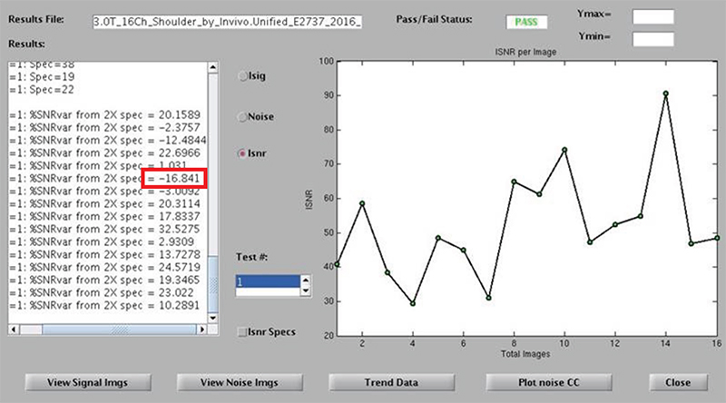

- 00000018WIA30C3DD20GYZ
- id_131066225.5
- Jul 25, 2025 5:15:38 PM
Multi-Coil Quality Assurance (MCQA) Tool
Prerequisites
| Personnel requirements | |||
|---|---|---|---|
| Required persons | Preliminary requirements | Procedure | Finalization |
| 1 | Depends on coil | Depends on coil | - |
| Tools and test equipment | |||
|---|---|---|---|
| Item | Quantity | Part number | Manufacturer |
| Coils and phantoms for all coils to be tested | N/A | - | - |
| Required conditions |
|---|
|
Set up coil and phantom |
About this task
The Multi-Coil Quality Assurance (MCQA) tool simplifies data acquisition and analysis of the signal-to-noise ratio (SNR) for surface coils. It helps detect dead coil elements and develop improved integrated signal-to-noise ratio (ISNR) specifications for all multi-coils independent of scanner instabilities.
The tool does not rely on region of interest (ROI) placement as other SNR tools have in the past. Instead, it chooses slice locations based on coil geometry, acquires one spin echo image, and turns off RF to gather a noise image. The noise mean of the 2D noise-only image is subtracted from the 2D intermediate image.
Run MCQA Tool
About this task
Procedure
View Report Results
Procedure
- After running the MCQA test, select View Report Details to review the results. The MCQA Viewer displays.
The Results File and Pass/Fail Status are listed across the top of the viewer.
The test results display in the Results window on the left side of the viewer.
To review past results: select , and select the desired coil results file.
Figure 2. MCQA Viewer 
Figure 3. MCQA Viewer Showing %SNR Variance 
- Use the MCQA Viewer options to retrieve the exact report you want to see:
- To review the results of the same coil, but for a different test, select the appropriate number from the Test # scroll box near the bottom of the screen.
- To graph the data, select one of three choices: Isig, Noise or Isnr. The corresponding results display in the window to the right. The integrated signal, noise, or integrated SNR values are listed on the vertical axis with the images along the horizontal axis.
- To graph the Isnr specification values in addition to the data, select the Isnr Specs box below Test # near the bottom of the viewer.
- The graph results automatically scale according to the data values. To manually change the vertical scale, enter the value into the Ymax and/or Ymin fields at the top right of the viewer.
- To view all the signal or noise images, select View Signal Imgs or View Noise Imgs, and an image viewer displays with one image per coil element, ordered left-to-right and top-to-bottom as shown in the example below.
Figure 4. Example of Signal and Noise Images 
- From the MCQA Viewer, select Plot noise CC to display a 3D plot of the noise cross-correlation data for the results being viewed. The data shows the relative cross correlation of noise between receiver channels. See the illustration below for an example plot.
-
Green data shows a one-to-one correlation.
-
Red data shows correlations above the threshold.
Figure 5. Example 3D Plot of Signal and Noise Images  Note
NoteThere are currently no specs for the noise cross-correlation data. It may be possible to determine patterns per coils and set specs as more data is collected.
-
MCQA Trend Viewer
About this task
Every time a MCQA test is completed, a new results file is generated. Past MCQA results are stored on the system, which allows for trending of ISNR data over time. These results can be graphically trended using the MCQA Trend Viewer. All the files available for trending are listed in the Results Files window at the left.
Procedure
Finalization
Procedure
- Click Quit to exit the MCQA tool.
- Close any image files still open on the screen.
- Remove all coils and phantoms from the system.